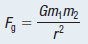
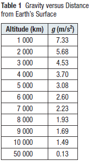
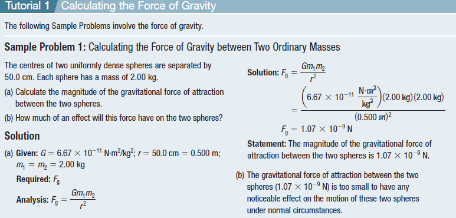
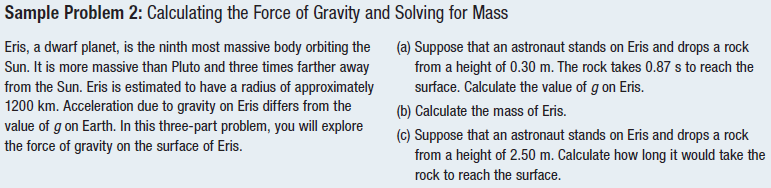
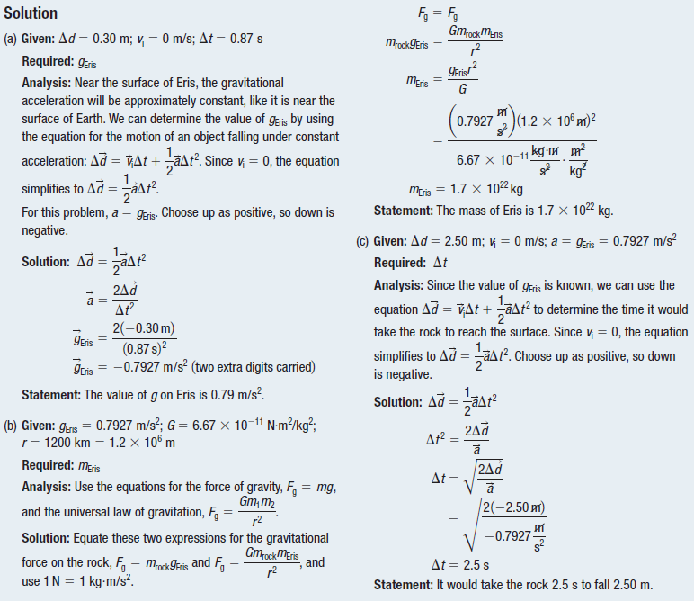
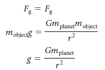
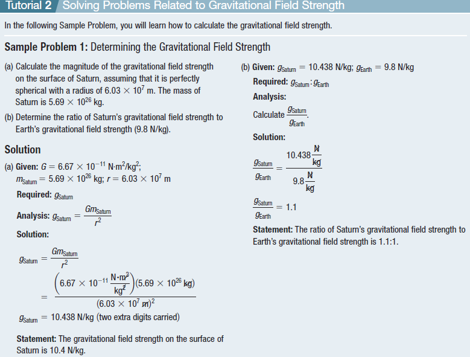
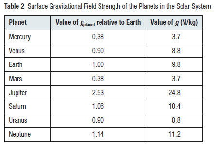

Newtonian Gravitation
Sir Isaac Newton, whose laws of motion provide the foundation of our study of mechanics, used known data about the solar system to describe the system of physical laws that govern the movement of celestial bodies around the Sun. Through this inquiry, he formulated the universal law of gravitation.
Select each tab to learn more.
There is a gravitational attraction between any two objects. If the objects have masses m1 and m2 and their centres are separated by a distance r, the magnitude of the gravitational force on either object is directly proportional to the product of m1 and m2 and inversely proportional to the square of r:

Newton’s law of gravitation plays a key role in physics for two reasons:
First, his work showed for the first time that the laws of physics apply to all objects. The same force that causes a leaf to fall from a tree also keeps planets in orbit around the Sun.
Second, the law provided us with an equation to calculate and understand the motions of a wide variety of celestial objects, including planets, moons, and comets.
Another important feature of the universal law of gravitation is that the force follows the inverse-square law.
The inverse-square law is a mathematical relationship between variables in which one variable is proportional to the inverse of the square of the other variable.
The law applies to gravitational forces and other phenomena, such as electric field strength and sound intensity.

Near Earth’s surface, g has an approximate value of 9.8 m/s2.
The precise value of g, however, decreases with increasing height above Earth’s surface based on the inverse-square law.





Practice
Two spherical asteroids have masses as follows: m1 5 1.0 3 1020 kg and m2 5 3.0 3 1020 kg. The magnitude of the force of attraction between the two asteroids is 2.2 3 109 N. Calculate the distance between the two asteroids.
Gravitational Fields
The gravitational field strength is the force of attraction per unit mass of an object placed in a gravitational field, and it equals the gravitational force on the object divided by the object’s mass.
On Earth, the gravitational field strength is approximately 9.8 N/kg. Notice that this has the same magnitude as the acceleration due to gravity on Earth’s surface, and thus has the same symbol, g.
Let us calculate the acceleration due to gravity g on a small mass m(object) near the surface of a spherical planet of mass m(planet) and radius r.
Show More


